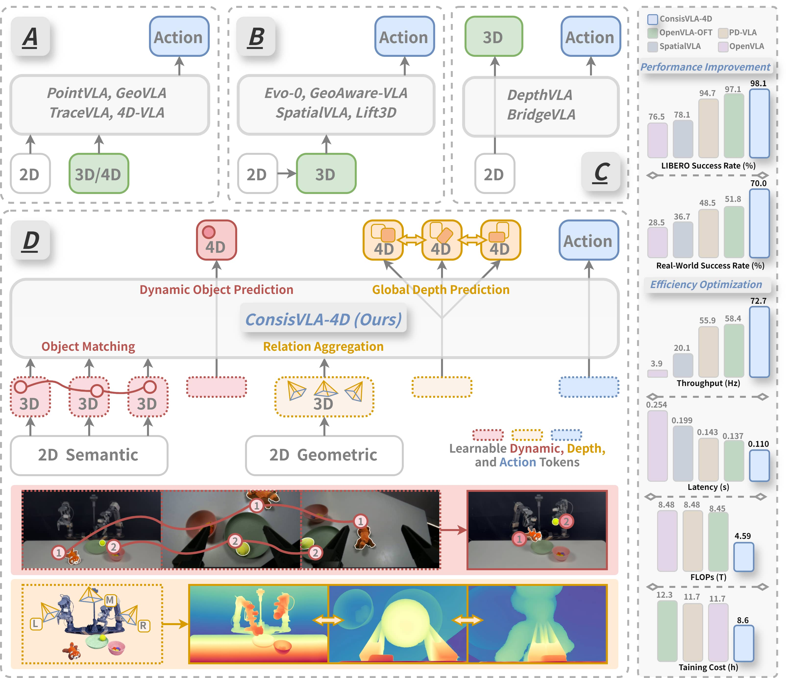
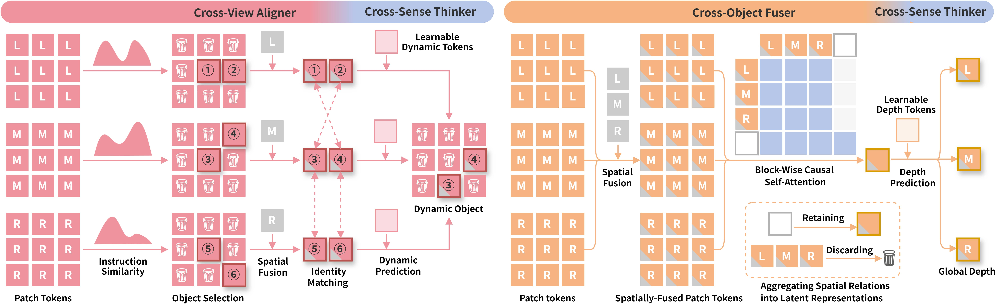
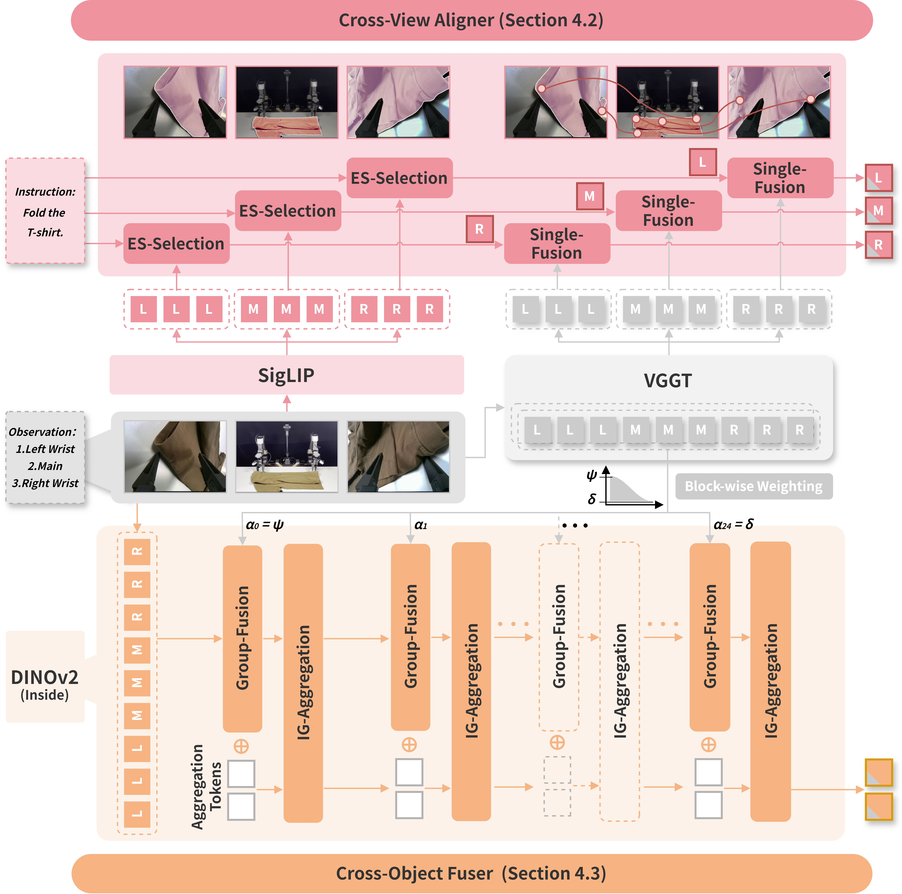
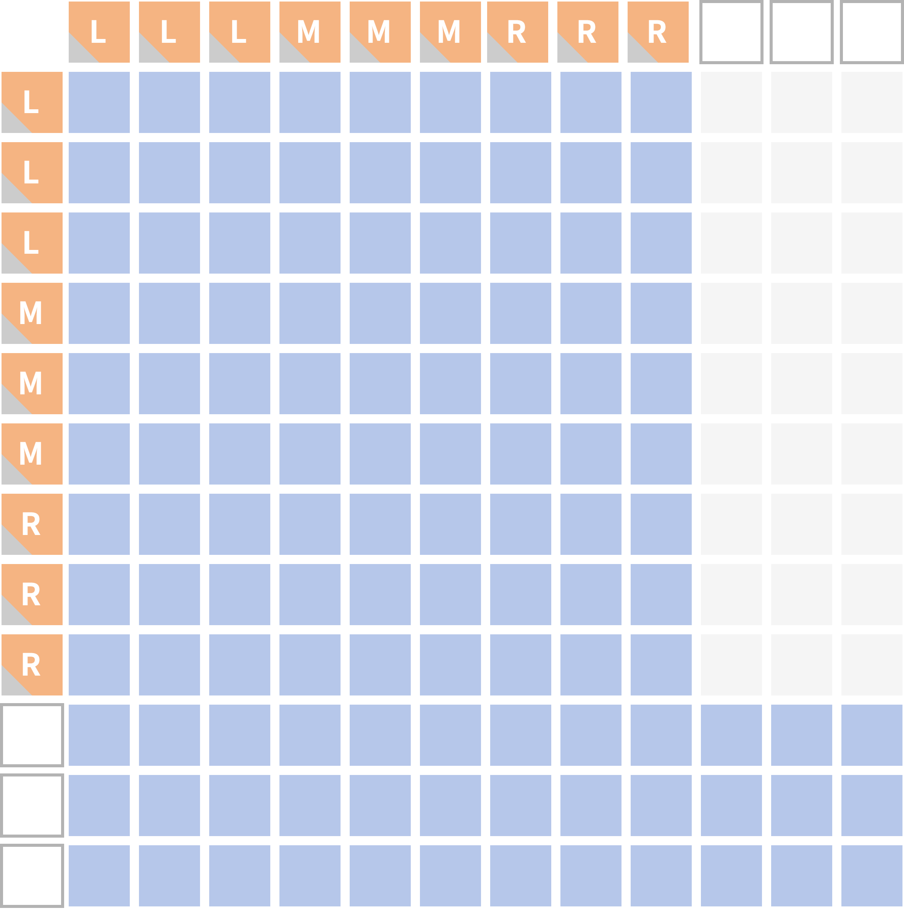
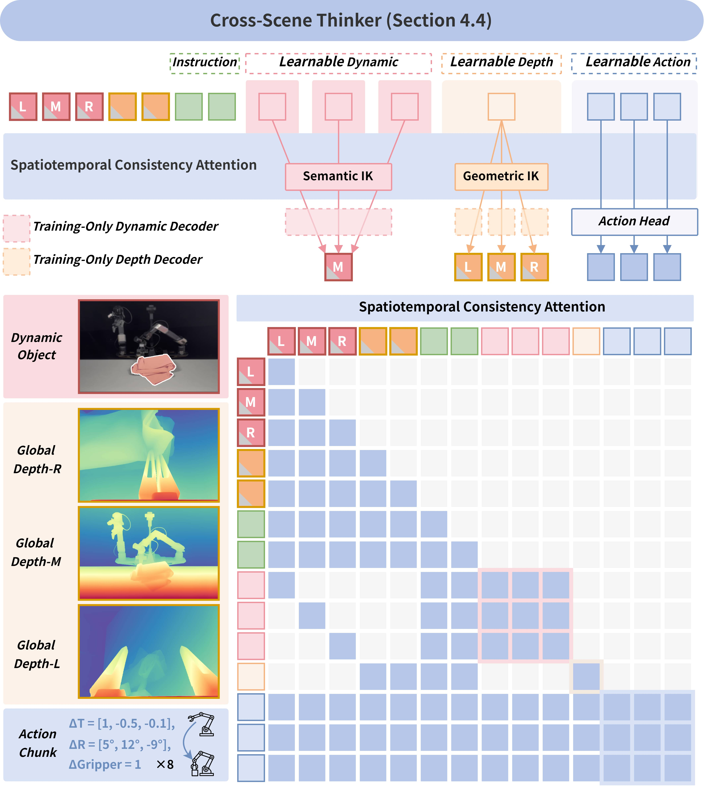
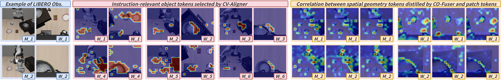
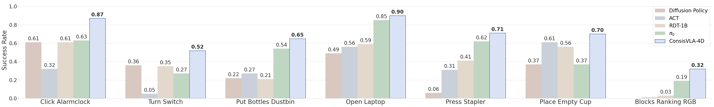
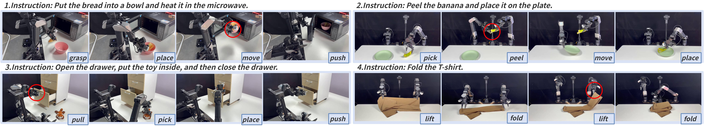

ConsisVLA-4D 论文阅读笔记
论文标题: ConsisVLA-4D: Advancing Spatiotemporal Consistency in Efficient 3D-Perception and 4D-Reasoning for Robotic Manipulation arXiv ID: 2605.05126v1 作者: Wei Li, Jizhihui Liu, Li Yixing, Junwen Tong, Rui Shao, Liqiang Nie — 哈工大（深圳）、中兴、深圳环湾研究院 投稿方向: CVPR 2026 代码*: github.com/JiuTian-VL/ConsisVLA-4D
一、核心问题
当前 VLA（Vision-Language-Action）模型主要存在两大缺陷：
- 3D 空间理解不足：多数模型止步于 2D 观测→动作的映射；引入点云/深度图的方法依赖额外传感器，计算开销大；2D→3D 投影的方法存在投影偏差、遮挡误差，缺乏跨视角和跨物体的几何一致性。
- 4D 时空推理薄弱：现有方法最多做到预测未来帧图像，缺少与指令相关场景的对齐，导致时空一致性差，动作生成不稳定。

图1：ConsisVLA-4D 与现有 VLA 范式对比总览。左侧展示了四种 VLA 范式从 2D 观测到动作生成的演进路径，右侧展示了 ConsisVLA-4D 在四个长时序真机任务上的执行效果。
左侧——四种 VLA 范式的演进：
- 范式 A（显式 3D/4D 输入）：直接使用点云、深度图、历史帧等 3D/4D 数据作为输入。代表方法如 PointVLA、GeoVLA。优点是信息丰富，缺点是需要额外传感器（深度相机、LiDAR），硬件成本和计算开销大。
- 范式 B（2D→3D 投影）：在 2D 特征基础上通过投影矩阵映射到 3D 空间。代表方法如 SpatialVLA、Evo。问题是投影偏差和遮挡误差难以消除，缺乏跨视角几何一致性。
- 范式 C（从 2D 预测 3D）：从 2D 观测中预测 3D 表示（如深度图），再用于动作生成。代表方法如 DepthVLA。预测出的 3D 表示存在尺度歧义，且缺少时间维度的推理。
- 范式 D（ConsisVLA-4D，本文提出）：在统一框架内实现 3D 感知→4D 推理的完整闭环。CV-Aligner 提取指令相关的跨视角物体；CO-Fuser 聚合多视角几何关系；CS-Thinker 基于未来动态物体和全局深度的隐式知识进行动作推理。仅使用原始视觉 token 的 1/8，实现时空一致性动作生成。
右侧——四个真机长时序任务示例： 展示了 ConsisVLA-4D 在微波炉操作（放面包→加热→关门）、剥香蕉（抓起→剥皮→放盘）、抽屉整理（拉开→放入→推回）、T恤折叠等任务上的执行效果，印证了时空一致性对长时序操作的关键支撑作用。*
二、核心思路
受人类操控行为启发（双眼视觉保持空间感知一致性 + 在稳定空间感知基础上预测未来状态），提出 ConsisVLA-4D，在一个统一框架内实现高效的 3D 感知 + 4D 推理，包含三个紧密耦合的模块：

图2：3D 感知→4D 推理完整流水线。该图从机制层面揭示 CV-Aligner 和 CO-Fuser 如何将各自的 3D 一致性拓展到 4D 时空域。
上半部分（CV-Aligner → 4D 推理）—— 从跨视角物体到动态物体预测：
CV-Aligner 在多视角（Main/Left/Right）图像中通过 ES-Selection + Single-Fusion 识别并匹配同一物体在不同视角下的身份，产生跨视角一致的物体表示 $\mathbf{z}_{\{M,L,R\}}^{\text{obj-3D}}$。进入 4D 推理阶段后，CS-Thinker 从多视角物体 token 出发，预测动作执行后固定视角（如 Main）中的动态物体——即回答”这个物体在动作后会变成什么样、出现在什么位置”。例如，从 Main 视角看到碗在桌上、Left 视角看到碗在微波炉旁，4D 推理预测碗放入微波炉后的状态。这里的关键是从”当前多视角静态物体”到”未来单视角动态物体”的推理跨越。
下半部分（CO-Fuser → 4D 推理）—— 从聚合几何关系到全局深度预测：
CO-Fuser 通过 Group-Fusion + IG-Aggregation 聚合多视角的空间几何关系，消除单视角的尺度歧义和遮挡误差，产生紧凑的聚合几何表示 $\mathbf{z}_{\mathcal{L}'}^{\text{agg-3D}}$。进入 4D 推理阶段后，CS-Thinker 从同一组几何表示出发，解码出所有视角的全局深度图——即回答”动作后整个场景的 3D 结构是什么样的”。这里的关键是从”抽象几何关系”到”具体深度图”的推理跨越。
整体意义： 3D 感知确保了空间一致性（物体身份跨视角一致 + 几何关系跨物体一致），4D 推理在此基础上扩展为时空一致性——既预测局部物体动态，又预测全局场景深度，两者共同作为动作生成的中间视觉推理支撑。*
2.1 CV-Aligner（跨视角对齐器）—— 保证跨视角物体语义一致性
- Explicit Semantic Object Selection（显式语义物体选择）：
- 用 SigLIP 编码多视角（Main/Left/Right）图像
- 通过 FiLM 调制增强与指令的相关性
- 计算每个视觉 token 与指令 embedding 的余弦相似度，仅保留 Top-K（默认 K=32）最相关的 token
- Single-Fusion（逐帧融合）：
- 将筛选后的语义 token 作为 Q，VGGT 提取的 3D 特征作为 K、V，通过 N 层 cross-attention 逐帧融合
- 利用 VGGT 预训练的点跟踪能力建立跨视角物体身份关联
- 效果：仅用原始视觉 token 的 1/8，实现跨视角物体语义一致性
2.2 CO-Fuser（跨物体融合器）—— 保证跨物体空间几何一致性
-
Group-Fusion（分组融合）：
-
具体来说，3 个视角（M, L, R）的图像在进入 DINOv2 时被拼成一个大 batch（vit_wrapper.py:465-466）：
python cached_img_regular = torch.cat([img_M, img_L, img_R], dim=1) # 所有视角的 DINOv2 图像拼接 cached_vggt_patches = torch.cat([vggt_M, vggt_L, vggt_R], dim=-2) # 所有视角的 VGGT 特征拼接 -
然后这”一组”（Group）拼接后的特征一起进入 DINOv2，在每个 Block 里和同样拼接后的 VGGT 特征做加权求和。这就是 Group-Fusion： $\mathbf{z}_{l}^{\text{geo-3D}} = (1-{\alpha_l}) \odot \mathbf{z}_{l}^{\text{geo}} + {\alpha_l} \odot \mathbf{z}_l^{\text{3D}}$
-
权重 $\alpha_l$ 随层深余弦衰减（浅层 VGGT 3D 空间先验占 ~20% → 深层 VGGT 退出，DINOv2 自身几何特征主导）
- 与 CV-Aligner 的 Single-Fusion（每视角独立做 Cross-Attn）对应：Group-Fusion 是所有视角”成组”一起做特征混合
- Implicit Geometric Relation Aggregation（隐式几何关系聚合）：
- 用块级因果自注意力（BC-Attn）对融合特征与可学习的聚合 token 进行建模
- 组内双向注意力 + 组间因果注意力
- 效果：仅用原始视觉 token 的 1/12–1/8，隐式建模跨物体空间几何关系，消除单视角几何歧义
-

图3：高效 3D 感知保证空间一致性。该图详细展示 CV-Aligner（红色）和 CO-Fuser（橙色）的内部结构，以及三个视觉编码器（SigLIP/DINOv2/VGGT）的分工协作。
子图 (a) CV-Aligner（红色）—— 跨视角物体语义一致性：
CV-Aligner 的输入来自 SigLIP（语义编码器，输出 256 个 patch token/视角）和 VGGT（空间编码器，输出 3D 特征）。流程分为三步：
- FiLM 调制：在 SigLIP 的每一层 Transformer Block 中，利用指令 embedding 生成 scale $\gamma(\mathbf{t})$ 和 shift $\beta(\mathbf{t})$ 参数，对视觉 token 做通道级调制 $\tilde{\mathbf{z}} = (1+\gamma) \odot \mathbf{z} + \beta$。这使得指令语义渗透到每个视觉 token 中，增强视觉特征与指令的相关性。
- ES-Selection（显式语义物体选择）：计算每个视觉 token 与指令 embedding 的余弦相似度，保留 Top-K（默认 K=32）最相关的 token。这步将 256 个 patch token 压缩为 32 个，压缩比 1/8，同时确保保留的是与当前任务指令最相关的物体 token。
- Single-Fusion（逐帧融合）：以筛选后的 32 个语义 token 为 Q，VGGT 的 3D 特征为 K、V，通过 4 层 cross-attention 逐帧（逐视角独立）融合。利用 VGGT 的点跟踪预训练能力，隐式建立同一物体在不同视角之间的身份关联。
最终输出 $\mathbf{z}_{i}^{\text{obj-3D}}$（每个视角 32 token），实现了跨视角物体语义一致性。
子图 (b) CO-Fuser（橙色）—— 跨物体空间几何一致性：
CO-Fuser 的输入来自 DINOv2（几何编码器）和 VGGT，所有视角的图像和 VGGT 特征拼接后一起处理。流程分为两步：
- Group-Fusion（分组融合）：在 DINOv2 的每个 Transformer Block 中，将 DINOv2 几何特征与 VGGT 空间特征按可学习的余弦衰减权重 $\alpha_l$ 做逐元素加权求和：$\mathbf{z}_{l}^{\text{geo-3D}} = (1-\alpha_l)\mathbf{z}_{l}^{\text{geo}} + \alpha_l\mathbf{z}_l^{\text{3D}}$。α_l 从前 12 层的 0.2 余弦衰减到后 12 层的 0——浅层充分注入 VGGT 的 3D 空间先验，深层由 DINOv2 自身几何特征主导。
- IG-Aggregation（隐式几何关系聚合）：引入 64 个可学习的聚合 token $\mathbf{z}^{\text{agg-3D}}$，与融合后的几何 token 一起通过 BC-Attn（块级因果注意力）处理——aggregator token 可以看到所有 patch token 以聚合全局几何信息，patch token 之间保持双向注意力。
最终仅保留 $\mathbf{z}_{\mathcal{L}'}^{\text{agg-3D}}$（64 token），压缩比 1/12–1/8，消除了单视角的几何歧义。
三个编码器的分工：
- SigLIP（So400m, 1152 维）→ 语义特征，与指令对齐
- DINOv2（ViT-L, 1024 维）→ 几何特征，自监督的几何一致性
- VGGT（1B, 1024 维）→ 空间特征，深度/点云/点跟踪先验，冻结不参与梯度更新*

图4：BC-Attn（块级因果自注意力）机制示意图，展示 CO-Fuser 中 IG-Aggregation 的核心注意力设计。
注意力 mask 设计： 图中展示三视角（Main/Left/Right）的 patch token（蓝色方块）与可学习的 Aggregation Token（橙色方块，用 A 标记）之间的注意力模式。关键设计是：
- 组内双向注意力：同一视角（如同一行 Main）的所有 patch token 之间可以互相看到（蓝色方块之间全连接），保留视角内的完整空间上下文。
- 组间因果注意力：Aggregation Token 可以看到所有视角的 patch token（向上聚合信息），但 patch token 不能看到 Aggregation Token（防止信息从聚合 token 回流到原始 token）。不同视角的 patch token 之间也不能直接互相关注（视角间不直接通信，所有跨视角信息必须通过 Aggregation Token 中转）。
- 压缩比 1/12：三视角共 3×256=768 个 patch token，最终仅保留 64 个 Aggregation Token，压缩比 ≈1/12。
设计意图： 这种非对称的注意力设计确保 Aggregation Token 成为跨视角几何信息的唯一汇聚点——它”看”到了所有视角的空间信息但不能”告诉”任何 patch token，迫使模型将所有跨视角的空间几何关系压缩到这 64 个 token 中。推理时只使用这 64 个 Aggregation Token，丢弃所有原始 patch token，实现从 768→64 的高效压缩。*
2.3 CS-Thinker（跨场景思考器）—— 保证跨场景时空一致性
核心创新：将 3D 感知拓展到 4D 推理，训练时学习隐式知识，推理时不显式生成中间表示。
- 多视角物体 → 单视角动态物体预测：
- 初始化可学习的动态 token，在 SC-Attn 中由对应视角的物体特征 + 指令引导
- 预测固定视角的动作后动态物体，用 CoTracker 监督（$\mathcal{L}_{\text{dyn-4D}}$）
- 抽象关系 → 具体全局深度预测：
- 初始化可学习的深度 token，由 CO-Fuser 的聚合几何关系 + 指令引导
- 解码为各视角的全局深度，用 Depth-Anything 监督（$\mathcal{L}_{\text{dep-4D}}$）
- SC-Attn（时空一致性注意力）：
- 同时处理物体 token、几何 token、指令、动态 token、深度 token、动作 token
- 动态物体预测和深度预测作为动作生成的中间视觉推理，并行解码
- 推理时：不生成动态物体和深度图，仅靠训练中学习到的隐式知识进行高效动作生成。这些隐式知识 token 占序列的不到 10%。

图5：高效 4D 推理。CS-Thinker 配合 SC-Attn 在统一上下文窗口内并行实现三件事：动态物体预测、全局深度预测、动作生成。训练时三者同时学习（动态物体和深度有监督信号），推理时仅执行动作生成（依赖隐式知识 IK）。
子图 (a) 整体结构 —— SC-Attn 统一上下文窗口：
CS-Thinker 的输入 token 序列被组织为：[语义token(64) | 几何token(64) | 文本token | Dynamic Queries(2N) | Depth Queries(N) | Action Queries]。所有 token 在 SC-Attn 的统一上下文窗口内并行处理，不同类型的 token 遵循不同的注意力模式（组内双向 + 组间因果）。其中 Dynamic Queries 和 Depth Queries 是可学习的隐式知识 token，占序列不到 10%。
子图 (b) 多视角物体 → 单视角动态物体预测（CoTracker 监督）：
为每个视角 $i$ 初始化一组可学习的 dynamic token $\mathbf{0}_{i}^{\text{dyn-4D}}$（3 视角 × 4 token/组 = 12 token）。在 SC-Attn 中，每个 $\mathbf{0}_{i}^{\text{dyn-4D}}$ 由对应视角的物体特征 $\mathbf{z}_{i}^{\text{obj-3D}}$ 和指令 $\mathbf{t}$ 独立引导。经过 LLM 处理后，dynamic token 的 hidden states 被送入 DynamicFeatDecoder（8 层 ViT Block，1024 维），解码出固定视角 $i^*$ 中动作后的动态物体图像 $\hat{\mathbf{z}}_{i^*}^{\text{dyn-4D}}$。
损失函数 $\mathcal{L}_{\text{dyn-4D}}$：仅对 CoTracker 离线标注的运动区域（$\mathbf{m}_{i^*}^{\text{obj-3D}}$）计算 MSE，避免背景干扰。这确保模型学到的是”物体因动作发生了怎样的变化”，而非”整个画面变成了什么样”。
子图 (c) 抽象关系 → 具体全局深度预测（Depth-Anything 监督）：
初始化一组可学习的 depth token $\mathbf{0}^{\text{dep-4D}}$（1 组 × 4 token = 4 token）。在 SC-Attn 中，这些 token 由 CO-Fuser 的聚合几何关系 $\mathbf{z}_{\mathcal{L}'}^{\text{agg-3D}}$ 和指令 $\mathbf{t}$ 共同引导，但与 dynamic token 的学习过程隔离。经过 LLM 处理后，depth token 的 hidden states 被送入另一组 DynamicFeatDecoder（img_channel=1, pred_num=视角数），解码出所有视角的全局深度图。
损失函数 $\mathcal{L}_{\text{dep-4D}}$：逐视角计算预测深度与 Depth-Anything 生成的真实深度的 MSE。注意 dynamic 和 depth 的解码器结构相同但参数独立——dynamic decoder 每个视角一个，depth decoder 单个解码器同时输出所有视角。
子图 (d) 并行动作解码：
动作 token $\mathbf{0}^A$ 在 SC-Attn 中与上述所有 visual reasoning token 及指令交互。训练时，LLM 最后一层的动作 token hidden states 通过 L1RegressionActionHead 预测连续动作，与 GT 动作计算 L1 损失 $\mathcal{L}_{\text{action}}$。三组损失联合优化：总损失 $= \mathcal{L}_{\text{action}} + \mathcal{L}_{\text{dyn-4D}} + \mathcal{L}_{\text{dep-4D}}$。
推理时（关键设计）： DynamicFeatDecoder 和 DepthFeatDecoder 不执行，不生成中间表示。模型仅依靠训练中学会的隐式知识（dynamic/depth dream token 在 LLM 中的 hidden states）辅助动作生成——这解释了为什么引入 2B 参数后推理反而更快 2.3 倍。*
三、训练目标
- $\mathcal{L}_{\text{action}}$：L1 损失，优化动作预测
- $\mathcal{L}_{\text{dyn-4D}}$：动态物体重建损失（CoTracker 监督）
- $\mathcal{L}_{\text{dep-4D}}$：全局深度重建损失（Depth-Anything 监督）
四、实验与结果
4.1 仿真实验（LIBERO 基准）
| 方法 | Spatial | Object | Goal | Long | Avg. |
|---|---|---|---|---|---|
| OpenVLA | 84.7 | 88.4 | 79.2 | 83.7 | 76.5 |
| OpenVLA-OFT | 97.6 | 98.4 | 97.9 | 94.5 | 97.1 |
| π₀.₅ | 98.8 | 98.2 | 98.0 | 92.4 | 96.9 |
| SpatialVLA | 88.2 | 89.9 | 78.6 | 55.5 | 78.1 |
| CoT-VLA | 87.5 | 91.6 | 87.6 | 69.0 | 83.9 |
| ConsisVLA-4D | 98.8 | 99.8 | 98.0 | 95.6 | 98.1 |
- 相比 SpatialVLA（专攻空间建模）平均提升 20%
- 相比 CoT-VLA（专攻视觉推理）平均提升 14.2%
- 在 Long 任务上表现尤为突出（95.6%），说明时空一致性对长时序任务至关重要

图6：LIBERO 观测示例与 CV-Aligner/CO-Fuser 注意力可视化。该图直观展示 ConsisVLA-4D 的两个核心模块在实际任务中分别关注什么，以及这种分工如何支撑仅用 1/8 token 就达到 SOTA 性能。
第 1 行（观测视图）—— 原始输入： 展示四个 LIBERO 任务的 Main View（主视角，M）和 Wrist View（腕部视角，W）观测图像。四个任务分别为：将碗放到饼干盒上/旁、从木柜顶层抽屉取出碗、打开微波炉（stove 场景）、将盘子放到托盘上。M 视角提供全局场景上下文（物体相对位置、桌面布局），W 视角提供近距离操作细节（夹爪与物体的精确空间关系）。
第 2 行（橙色标记 M/W）—— CV-Aligner 提取的指令相关物体 token： 橙色标记显示 CV-Aligner 选出的 Top-K（K=32）语义 token 在原图中的对应位置。可以看到，CV-Aligner 精准定位了任务指令涉及的关键物体——饼干盒上的碗、抽屉中的碗、炉灶、盘子——而过滤掉了背景、桌面纹理、无关物体。注意 M 和 W 视角下同一物体的标记位置不同但语义一致，验证了跨视角物体身份关联的有效性。
第 3 行（蓝色标记 R）—— CO-Fuser 捕获的聚合几何关系 token： 蓝色标记显示 CO-Fuser 的 64 个 aggregator token 如何分布注意力到原始 patch token 上。与 CV-Aligner 的"点状聚焦"（只关注指令相关物体）不同，CO-Fuser 呈现"分布式注意力"——同时覆盖任务相关的多个空间节点（物体、容器、桌面边缘）。这反映了 CO-Fuser 关注的是物体之间的空间几何关系（"碗在饼干盒上方""抽屉的几何结构"）而非物体语义本身。
关键洞察： CV-Aligner 回答"关注什么物体"（语义选择），CO-Fuser 回答"物体在哪里、它们之间的空间关系如何"（几何聚合）。两者功能互补，分别在语义和几何维度实现高效压缩，合计将视觉 token 压缩到 1/8，却保留了比原始 256 token 更精准的任务相关信息。*
ManiSkill2 结果：
| 方法 | PickCube | StackCube | PushCube | Avg. |
|---|---|---|---|---|
| Octo | 86% | 76% | - | 81.0% |
| OpenVLA† | 67% | 64% | 71% | 67.3% |
| CogACT | 95% | 90% | - | 92.5% |
| GeoVLA | 90% | 90% | - | 90.0% |
| Dita | 79% | 80% | - | 79.5% |
| OpenVLA-OFT† | 85% | 93% | 88% | 88.7% |
| ConsisVLA-4D | 93% | 95% | 95% | 94.3% |
† 表示在与 ConsisVLA-4D 相同条件下复现的结果。ManiSkill2 的三个任务侧重测试精细空间感知能力（PickCube 考察抓取精度、StackCube 考察堆叠空间推理、PushCube 考察推动轨迹规划），ConsisVLA-4D 在三个任务上均达到或接近最优。
RoboTwin 2.0 结果（7 个 ALOHA 双臂任务）：

图7：RoboTwin 2.0 基准上的双臂仿真结果。7 个任务涵盖点击闹钟、翻转开关、放瓶子进垃圾桶、打开笔记本、按压订书机、放空杯到杯垫、按 RGB 顺序排列方块等多样化场景，每个任务进行 100 次试验。ConsisVLA-4D（蓝色柱）在所有任务上均取得最优或接近最优的成功率，验证了时空一致性设计对双臂协调操作的普适优势。RoboTwin 2.0 基于 ALOHA 双臂平台，任务需要双臂精确配合，对 3D 空间感知（物体相对位置）和 4D 推理（双臂动作协调的时序同步）都有很高要求。
4.2 效率对比
| 场景 | 方法 | 延迟 ↓ | 吞吐 ↑ | FLOPs ↓ | 训练成本 ↓ |
|---|---|---|---|---|---|
| 仿真 | OpenVLA | 0.254s | 3.9Hz | 8.48T | 11.7h |
| 仿真 | OpenVLA-OFT | 0.137s | 58.4Hz | 8.45T | 12.3h |
| 仿真 | ConsisVLA-4D | 0.110s | 72.7Hz | 4.59T | 8.6h |
| 真机 | OpenVLA | 0.552s | 1.8Hz | 16.30T | 12.8h |
| 真机 | OpenVLA-OFT | 0.334s | 74.8Hz | 14.95T | 13.7h |
| 真机 | ConsisVLA-4D | 0.231s | 108.2Hz | 9.68T | 10.1h |
- 尽管额外引入了约 2B 参数（主要来自 VGGT），推理速度反而比 OpenVLA 快 2.3×，吞吐量提升 2.4×
- 关键原因是高效 3D 感知阶段大幅压缩了视觉 token（1/8），减少了后续计算量
4.3 真机实验
在 Galaxea R1 Lite 和 AgileX Cobot Magic 两个平台，4 个长时序双臂任务（微波炉操作、剥香蕉、抽屉整理、T恤折叠）：
| 方法 | Avg. Success（Galaxea） | Avg. Success（AgileX） |
|---|---|---|
| OpenVLA | 28.5% | 30.0% |
| OpenVLA-OFT | 51.8% | 50.3% |
| ConsisVLA-4D | 70.0% | 68.3% |
- 相比 OpenVLA 提升 41.5%，相比 OpenVLA-OFT 提升 18.2%
- 跨平台波动仅 ±1.7%，sim-to-real 迁移能力稳定

图8：ConsisVLA-4D 在 Galaxea R1 Lite 平台上执行四个长时序双臂任务的完整过程。每个任务展示 4–5 个关键执行阶段，红色圆圈标注精细夹爪操作。该图验证了时空一致性设计对长时序操作稳定性的关键作用。
任务 1 —— 微波炉操作（3 阶段）： 指令："Put the bread into a bowl and heat it in the microwave."
- 阶段 1（Put）：双臂协作将面包准确放入碗中——需要精确的 3D 空间感知来定位碗口
- 阶段 2（Place）：将碗平稳插入微波炉狭窄内腔——场景从桌面转移到微波炉内部，空间参照系完全改变，考验 4D 推理对场景变化的适应
- 阶段 3（Close）：关闭微波炉门——红色圆圈标注了夹爪精准抓握微波炉门把手的操作
任务 2 —— 剥香蕉（3 阶段）： 指令："Peel the banana and place it on the plate."
- 阶段 1（Pick）：从桌面抓取香蕉——需要区分香蕉与其他物体的几何边界
- 阶段 2（Peel）：一只手（左臂）稳定香蕉，另一只手（右臂）执行精细剥皮——红色圆圈标注剥皮动作。这是对双臂协调能力的极限测试，也是时空一致性的直接体现（手部动作需要和物体状态变化同步）
- 阶段 3（Place）：将剥好的香蕉放到盘子上——场景再次变化，需要定位盘子位置
任务 3 —— 抽屉整理（3 阶段）： 指令："Open the drawer, put the toy inside, and then close the drawer."
- 阶段 1（Pull）：拉开抽屉——需要感知抽屉把手的位置和拉开方向
- 阶段 2（Place）：将玩具放入抽屉——物体的目标位置在抽屉内部，存在遮挡
- 阶段 3（Push）：推回抽屉——红色圆圈标注手指精确推抽屉的操作
任务 4 —— T恤折叠（3 阶段）： 指令："Fold the T-shirt."
- 阶段 1–3（Step 1→Step 2→Step 3）：逐步折叠 T恤，每个阶段都需要精确的布料操作。红色圆圈标注了夹爪夹取布料边角的精细操作。T恤折叠是经典的变形物体操作任务，对时空一致性要求极高——布料形状持续变化，模型需要持续追踪物体的新状态。
与数值结果的对应： OpenVLA 在此类长时序任务上成功率仅 28.5%（Galaxea）/ 30.0%（AgileX），OpenVLA-OFT 为 51.8%/50.3%，而 ConsisVLA-4D 达到 70.0%/68.3%。该图直观展示了性能提升的来源——时空一致性使得模型在场景持续变化的长时序操作中能稳定追踪物体状态并生成准确动作。*
4.4 消融实验
消融实验在仿真（LIBERO 四套件）和真机（Galaxea R1 Lite，微波炉操作 + T恤折叠两个任务，每个任务 30 次试验）上进行。
4.4.1 CV-Aligner 与 CO-Fuser 消融
| ES-Sel. | S-Fus. | G-Fus. | IG-Agg. | LIBERO SR ↑ | Real-World SR ↑ |
|---|---|---|---|---|---|
| ✗ | ✓ | ✓ | ✓ | 93.9 (−4.2) | 71.7 (−6.6) |
| ✓ | ✗ | ✓ | ✓ | 95.5 (−2.6) | 73.3 (−5.0) |
| ✓ | ✓ | ✗ | ✓ | 95.6 (−2.5) | 70.0 (−8.3) |
| ✓ | ✓ | ✓ | ✗ | 91.7 (−6.4) | 68.3 (−10.0) |
| ✓ | ✓ | ✓ | ✓ | 98.1 | 78.3 |
解读：
- 移除 ES-Selection（−7.0% LIBERO / −10.0% 真机）：失去指令引导的语义筛选后，视觉 token 包含大量与任务无关的背景信息，干扰了模型对关键物体的关注。ES-Selection 不仅压缩 token，更重要的是提供了"语义聚焦"，这是性能的基础保障。
- 移除 Single-Fusion（−2.6% / −5.0%）：语义 token 没有 VGGT 3D 特征的注入，跨视角的物体身份关联变弱，同一物体在不同视角可能被识别为不同物体。降幅相对较小说明 ES-Selection 本身已经提供了可观的性能。
- 移除 Group-Fusion（−2.5% / −8.3%）：DINOv2 几何特征失去 VGGT 的空间先验注入，单视角深度歧义无法通过多视角互补消除。真机上降幅更大，说明真实场景中几何歧义问题更严重（光照变化、遮挡等）。
- 移除 IG-Aggregation（−6.4% / −10.0%）：这是降幅最大的单项移除。没有 BC-Attn 聚合跨视角几何关系，模型无法建立全局空间理解，等同于独立处理每个视角。证明隐式几何关系聚合是 CO-Fuser 最核心的设计。
- 全部移除 vs 全部保留（−7.0% / −11.6%）：两个模块同时移除后，LIBERO 降至 ~91%，真机降至 ~67%，回到接近 OpenVLA-OFT 的水平（~97% / ~52% 在其他任务上），说明 3D 感知模块是性能提升的主要驱动力。
4.4.2 CS-Thinker（4D 推理）消融
| Dyn.O. | Glob.D. | Attention | LIBERO SR ↑ | Real-World SR ↑ |
|---|---|---|---|---|
| ✗ | ✗ | SC-Attn | 93.3 (−4.8) | 66.7 (−11.6) |
| ✗ | ✓ | SC-Attn | 95.4 (−2.7) | 73.3 (−5.0) |
| ✓ | ✗ | SC-Attn | 94.7 (−3.4) | 71.6 (−6.7) |
| ✓ | ✓ | Causal | 90.9 (−7.2) | 66.7 (−11.6) |
| ✓ | ✓ | Bidirectional | 92.2 (−5.9) | 68.3 (−10.0) |
| ✓ | ✓ | SC-Attn | 98.1 | 78.3 |
解读：
- 同时移除 Dyn.O. 和 Glob.D.（−4.8% / −11.6%）：这相当于完全去掉 4D 推理，模型退化为仅有 3D 感知。真机上降幅（−11.6%）远大于仿真（−4.8%），说明真实场景中动态场景变化更复杂，4D 推理的贡献更关键。
- 仅保留 Glob.D.（−2.7% / −5.0%）vs 仅保留 Dyn.O.（−3.4% / −6.7%）：Global Depth 的贡献略大于 Dynamic Object。可能的解释是深度预测提供了全局场景结构的理解（"这个场景的 3D 形状是什么"），对动作生成更直接有用；而动态物体预测关注的是局部物体变化，信息更稀疏。
- SC-Attn vs Causal/Bidirectional（+5.9~7.2% / +10.0~11.6%）：SC-Attn 相比标准注意力模式的提升非常显著。普通 Causal 注意力下，不同类型的 token（语义/几何/动态/深度/动作）被迫遵循同一种注意力模式，无法进行有针对性的信息交互。SC-Attn 的组间因果 + 组内双向设计使得：语义/几何 token 组内双向共享信息、动态/深度/动作 token 只能单向从感知 token 获取信息而不反向泄露——这种定制化信息流是时空一致性建模的关键。
4.4.3 稀疏比与压缩方法消融
| 稀疏比 | $\mathbf{z}^{\text{obj-3D}}$ | $\mathbf{z}^{\text{agg-3D}}$ | $\mathbf{0}^{\text{4D}}$ | LIBERO SR ↑ | Real-World SR ↑ |
|---|---|---|---|---|---|
| ≈1/4 | 128 | 128 | 30 | 98.0 (−0.1) | 80.0 (+0.7) |
| ≈1/8 | 64 | 64 | 18 | 98.1 | 78.3 |
| ≈1/16 | 32 | 32 | 12 | 94.9 (−3.2) | 68.3 (−10.0) |
| ≈1/8 (FastV†) | — | — | — | 88.8 (−9.3) | 50.0 (−28.3) |
| ≈1/8 (SliME†) | — | — | — | 85.6 (−12.5) | 46.7 (−31.6) |
解读：
- 1/4 → 1/8 → 1/16：1/8 是最佳平衡点。1/4 保留更多 token 但真机性能仅微升 0.7%，说明多余的 token 主要是冗余信息而非有效信号。1/16 压缩过猛，在真机上骤降 10%，说明 1/8 以下已经无法保留足够的空间信息。
- FastV 和 SliME 对比：同为 8× 压缩比，通用压缩方法 FastV（基于注意力分数的 token 剪枝）和 SliME（基于相似度聚类的 token 合并）在 LIBERO 上比 ConsisVLA-4D 低 9.3–12.5 个百分点，真机上更是低 28.3–31.6 个百分点。这揭示了一个核心差异：通用 token 压缩方法保留的是"对重建最有用"的 token，而 ConsisVLA-4D 的 ES-Selection + IG-Aggregation 保留的是"对任务指令最有用的 token"。在真机场景中指令与视觉的精确对齐远比视觉重建质量重要。
五、关键洞察与技术亮点
- 从 3D 到 4D 的范式升级：不仅构建 3D 空间表示，还将时间维度纳入，预测动作后的动态场景变化，实现完整的 4D 时空推理闭环。
- 训练-推理解耦的隐式知识设计：CS-Thinker 在训练时学习动态物体和深度的显式预测（有监督信号），推理时只依赖隐式知识，不增加额外推理开销。
- 多编码器协同分工：
- SigLIP → 语义特征（与指令对齐）
- DINOv2 → 几何特征（自监督的几何一致性）
- VGGT → 空间特征（深度、点云、点跟踪先验）
- 极致的 token 压缩：通过指令相关性筛选 + 几何关系聚合，将视觉 token 压缩到 1/8–1/12，使得即使加了 2B 参数的 VGGT，整体反而更快。
- SC-Attn 的定制化注意力：不是简单的 causal 或 bidirectional，而是针对不同类型 token（语义/几何/动态/深度/动作）设计组间因果 + 组内双向的混合注意力。
六、代码实现解读
6.1 整体代码结构
CVPR26-ConsisVLA-4D/
├── prismatic/ # 核心模型库（基于 OpenVLA 架构进行改造）
│ ├── models/
│ │ ├── vit_wrapper.py # ★ PrismaticHybridCompressionVisionBackbone — 整个视觉端的主入口
│ │ ├── vggt_dino.py # ★ VGGTVisionTransformer + VGGTDinoBlock — 自定义 DINOv2 ViT 块
│ │ ├── feats_decoders.py # ★ DynamicFeatDecoder — 动态物体/深度的解码器（Conv 风格）
│ │ ├── frame_fuser.py # FrameFuser — SigLIP token 与 VGGT 特征的 cross-attention 融合
│ │ ├── mm_sampler.py # TextGuidedSampler — ES-Selection 的代码实现
│ │ ├── action_heads.py # L1RegressionActionHead / DiffusionActionHead
│ │ ├── projectors.py # ProprioProjector（本体感知）/ NoisyActionProjector（扩散）
│ │ ├── film_vit_wrapper.py # FiLM 调制的 VisionTransformer Block 包装器
│ │ └── vlms/prismatic.py # PrismaticVLM — 基座 VLM 的 forward + generate
│ ├── extern/hf/
│ │ └── modeling_prismatic.py # ★ OpenVLAForActionPrediction — HF 风格的完整 forward 逻辑
│ ├── conf/
│ │ ├── vla.py # VLAConfig — 训练配置注册
│ │ └── models.py # 模型架构配置
│ └── vla/
│ ├── action_tokenizer.py # ActionTokenizer — 连续动作离散化/反离散化
│ └── constants.py # 常量定义（ACTION_DIM, NUM_ACTIONS_CHUNK 等）
├── vggt/ # ★ VGGT-1B 模型（来自 Meta）
│ ├── models/aggregator.py # Aggregator — 交替注意力的多帧处理核心
│ ├── models/vggt.py # VGGT — 顶层模型，组合 Aggregator + Camera/Depth/Point/Track Heads
│ ├── layers/block.py # Block — VGGT 的基础 Transformer 块（支持 RoPE）
│ ├── heads/dpt_head.py # DPT 头 — 深度/点云预测
│ └── heads/track_head.py # TrackHead — 点跟踪预测
├── vla-scripts/finetune.py # ★ 微调主脚本（训练入口）
└── experiments/robot/libero/ # LIBERO 评估相关脚本
6.2 论文模块 → 代码映射
| 论文概念 | 核心代码文件 | 关键类/函数 |
|---|---|---|
| CV-Aligner: ES-Selection | mm_sampler.py |
TextGuidedSampler.forward() — 计算 vision-text 余弦相似度 + Top-K 选取 |
| CV-Aligner: FiLM | film_vit_wrapper.py, vggt_dino.py |
FiLMedVisionTransformerBlock + VGGTDinoBlock.scale/shift |
| CV-Aligner: Single-Fusion | frame_fuser.py |
FrameFuser — Cross-Attn: Q=语义token, K/V=VGGT特征 |
| CO-Fuser: Group-Fusion | vggt_dino.py:154-157 |
VGGTDinoBlock.forward() 中的 (1-α)*x_img + α*vggt_features |
| CO-Fuser: IG-Aggregation | vggt_dino.py:404-407 |
VGGTVisionTransformer._get_attn_mask() — BC-Attn mask 构造 |
| CO-Fuser: 余弦衰减权重 α_l | vggt_dino.py:320-321 |
VGGTVisionTransformer.__post_init__() 中的 vggt_proportion |
| CS-Thinker: Dream Queries | modeling_prismatic.py:370-376 |
init_dream_queries() — 可学习的 dynamic/depth token |
| CS-Thinker: Dyn-4D Decoder | feats_decoders.py |
DynamicFeatDecoder — 从 dream token 解码动态物体图像 |
| CS-Thinker: Dep-4D Decoder | feats_decoders.py |
DynamicFeatDecoder — 从 dream token 解码深度图（img_channel=1） |
| CS-Thinker: SC-Attn | modeling_llama.py, modeling_prismatic.py:546-559 |
LLM 内部按 token_slices 进行分组注意力 |
| Action Head | action_heads.py |
L1RegressionActionHead.predict_action() |
| 整体 forward | modeling_prismatic.py:583-791 |
OpenVLAForActionPrediction.forward() |
6.3 视觉端架构详解
6.3.1 PrismaticHybridCompressionVisionBackbone（vit_wrapper.py:265-474）
这是整个视觉处理的主入口，它在 finetune.py:822-826 被初始化并替换原始 VLA 的 vision_backbone。
初始化流程（__init__）：
1. _wrap_dino() → 将 DINOv2 ViT 的 Block 替换为 VGGTDinoBlock（支持 VGGT 特征融合 + FiLM）
→ 将 DINOv2 ViT 的 class 替换为 VGGTVisionTransformer（支持 BC-Attn）
→ 添加 64 个可学习的 aggregator token（aggrator_num=64）
2. _wrap_siglip() → 将 SigLIP ViT 的 Block 替换为 FiLMedVisionTransformerBlock（支持 FiLM）
→ 将 SigLIP ViT 的 class 替换为 VisionTransformerRegister
3. 初始化：
- dino_projector: Linear(1024→1024+1152→4096)
- siglip_mm_sampler: TextGuidedSampler（ES-Selection）
- siglip_frame_fuser: FrameFuser（Single-Fusion: Cross-Attn）
- siglip_projector: Linear(1152→1024+1152→4096)
- vggt_encoder: Aggregator（从 VGGT-1B 权重加载）
- cross_vit_model: CrossVisionTransformerInteractionWrapper（可选，多 ViT 间交互）
关键维度：
- SigLIP 输出维度：1152
- DINOv2 输出维度：1024
- VGGT 输出维度：1024（与 DINOv2 一致，方便融合）
- LLM 嵌入维度：4096（Llama-2 7B）
- Aggregator token 数量：64（
dino_cfg.num_aggregator）
6.3.2 VGGT 特征融合过程（forward 中的核心路径）
论文中多视角（M, L, R = 3 视角）的处理流程在代码中对应 num_images_in_input > 1 的分支（vit_wrapper.py:436-474）：
# 伪代码：多图像 forward 路径
for each viewpoint (M, L, R):
# 1) SigLIP 分支
siglip_patches = siglip_vit(image_siglip, language_embedding) # 提取语义特征
siglip_patches = TextGuidedSampler(siglip_patches, instruction) # ES-Selection（Top-K=32）
# 2) VGGT 分支（冻结，无梯度）
with torch.inference_mode():
vggt_patches_list, _, vggt_output = vggt_encoder(vggt_image)
# 3) Single-Fusion：语义 token + VGGT 3D 特征
siglip_patches = FrameFuser(siglip_patches, vggt_output)
siglip_patches = siglip_projector(siglip_patches) # → 4096 维
# 4) DINOv2 + VGGT Group-Fusion（跨视角批量处理）
dino_features = dino_vit(all_images_dinov2,
vggt_features=all_vggt_patches, # Group-Fusion
language_embedding) # FiLM
dino_features = dino_projector(dino_features) # → 4096 维
# 5) 拼接输出
output = concat([siglip_patches_all_views, dino_features])
实际 token 数量（以 2 视角为例，论文中仿真使用 Main + Wrist）：
- SigLIP token：
2 * 32(selected) = 64 - DINOv2 aggregator token：
64 - Dream queries：
2*N + N（dynamic = 2N, depth = N，N =num_dream_queries_per_image） - 总计 ≈ 128 + dream_queries
6.3.3 论文中的「1/8 压缩比」在代码中的体现
论文说的 1/8 压缩来源于：
- 原始 ViT 每个视角输出 256 个 patch token（224/14 = 16 × 16 grid）
- SigLIP 端通过 ES-Selection 从 256 → 32（1/8）
- DINOv2 端通过 aggregator token（64 个）隐式压缩了几何信息
代码中 siglip_cfg.num_vision_queries = 32 对应 ES-Selection 的 K=32，dino_cfg.num_aggregator = 64 对应 Aggregator token 数量。
6.4 VGGT 集成细节
6.4.1 VGGT-1B 模型简介（vggt/models/vggt.py）
VGGT（Visual Geometry Grounded Transformer）是一个前馈式大型 Transformer，输入同一场景的多张 RGB 图像，一次性预测：
- 相机姿态（CameraHead）
- 深度图（DPTHead + DepthHead）
- 3D 世界坐标点云（DPTHead + PointHead）
- 点跟踪（TrackHead）
核心：Aggregator（vggt/models/aggregator.py）
交替注意力机制：在处理多帧图像时，交替执行：
- Frame Attention：每帧内部的自注意力（tokens shape:
B*S, P, C） - Global Attention：跨帧的全局注意力（tokens shape:
B, S*P, C）
# aggregator.py:238-249 — 交替注意力调度
for _ in range(aa_block_num):
for attn_type in aa_order: # ["frame", "global"]
if attn_type == "frame":
tokens = process_frame_attention(tokens, ...) # 帧内
elif attn_type == "global":
tokens = process_global_attention(tokens, ...) # 帧间
输出：每一层交替注意力后的拼接特征 [B, S, P, 2C]（frame 特征 + global 特征拼接）。
6.4.2 在 ConsisVLA-4D 中的使用方式
- VGGT 仅在训练和推理时作为特征提取器，不参与梯度更新（
inference_mode） - 从 HuggingFace 加载预训练权重：
ckpts/model.pt（vit_wrapper.py:322） - 从 VGGT 的 aggregator 输出中提取：
- 多层 patch token 列表：用于 DINOv2 每层的 Group-Fusion（
vggt_patches_list，shape:[num_layers, B, num_patches, 1024]） - 最后一层全局输出：用于 SigLIP 的 Single-Fusion（
vggt_output_patches）
- 多层 patch token 列表：用于 DINOv2 每层的 Group-Fusion（
# vit_wrapper.py:456-459
with torch.inference_mode():
vggt_patches_list, token_start_idx, vggt_output_patches = vggt_encoder(vggt_img)
# vggt_patches_list: [num_layers] × [B*S, P, 2C] → 提取后变为 [num_layers, B, num_patches, D]
vggt_patches_list = torch.stack(vggt_patches_list, dim=0).squeeze(2)[:, :, token_start_idx:]
6.5 CV-Aligner 实现细节
6.5.1 TextGuidedSampler（mm_sampler.py）—— ES-Selection 的代码实现
class TextGuidedSampler:
def __init__(self, config):
self.vision_topk = config.get("num_vision_queries", 32) # K=32
self.text_encoder = SiglipTextModel / CLIPTextModel # 用 SigLIP 的 text encoder
self.text_post_projector = MLP(text_dim → vision_dim → vision_dim)
def forward(self, vision_embedding, text_ids):
# 1) 用 SigLIP Text Encoder 编码指令
text_embedding = self.text_encoder(text_ids).last_hidden_state
text_embedding = self.text_post_projector(text_embedding) # 投影到视觉空间
# 2) 计算余弦相似度矩阵 [B, N_vision, M_text]
similarity = cosine_sim(norm(vision_embedding), norm(text_embedding))
# 3) 训练时加 Gumbel 噪声
if training:
similarity += Gumbel_noise(0.1)
# 4) 按文本维度取平均 → Top-K 选取
probs = similarity.mean(dim=2) # [B, N]
selected_indices = topk(probs, K=32) # 选取相似度最高的 32 个视觉 token
return gather(vision_embedding, selected_indices)
与论文公式的对应：
- 论文 eq. (6)：$s_{i,j} = \frac{\mathbf{z}_i^{\text{sem},j} (\mathbf{W_t \cdot t}^\top)}{||\mathbf{z}_i^{\text{sem},j}||_2 \cdot||\mathbf{W_t \cdot t}||_2}$
- 代码：
cosine_sim(norm(vision), norm(text_projected))→ 本质一致 - 论文的 $\mathbf{W_t}$ 映射矩阵在代码中对应
text_post_projector（MLP）
6.5.2 FrameFuser（frame_fuser.py）—— Single-Fusion 的代码实现
class FrameFuser:
"""
逐帧融合：Q = 语义 token（SigLIP 输出），K/V = VGGT 3D 特征
config: hidden_size=1152, vggt_hidden_size=1024, num_hidden_layers=4, num_heads=16
"""
def forward(self, input_features, vggt_features):
# Q: input_features [B, N_siglip, 1152]
# K, V: vggt_features [B, N_vggt, 1024]
for layer in self.layers: # 4 层 cross-attention
hidden = self.self_attn(input_features=Q, vggt_features=KV) # Q 来自语义, KV 来自 VGGT
hidden = self.mlp(hidden)
input_features = residual_add(input_features, hidden)
return self.norm(input_features)
这与论文的描述一致：论文 eq. (9) 描述 Single-Fusion 为逐帧地将 VGGT 的 3D 特征与语义 token 通过 cross-attention 融合，利用 VGGT 预训练的点跟踪能力建立跨视角物体身份关联。
6.5.3 FiLM 调制（论文 eq. 5）
论文公式：$\tilde{\mathbf{z}}_{i,l}^{\text{sem}} = (\mathbf{1}+\gamma(\mathbf{t})) \odot \text{Self-Attn}(\mathbf{z}_{i,l}^{\text{sem}}) + \beta(\mathbf{t})$
在代码中分为两部分实现：
SigLIP 端（film_vit_wrapper.py）：
class FiLMedVisionTransformerBlock:
def forward(self, x, language_embeddings):
gamma = self.scale(language_embeddings) # Linear(llm_dim → vision_dim)
beta = self.shift(language_embeddings)
x = x + self.attn(self.norm1(x))
x = x * (1 + gamma) + beta # FiLM modulation
x = x + self.mlp(self.norm2(x))
DINOv2 端（vggt_dino.py:159-164）：
class VGGTDinoBlock:
def forward(self, x, vggt_features, vggt_proportion, attn_mask, average_language_embedding):
# 先融合 VGGT 特征（Group-Fusion）
x_img = (1 - vggt_proportion) * x_img + vggt_proportion * vggt_features
x = concat([x_img, x_agg])
# 再应用 FiLM
gamma = self.scale(average_language_embedding)
beta = self.shift(average_language_embedding)
x = x + self.drop_path(self.ls1(self.attn(self.norm1(x), attn_mask)))
x = x * (1 + gamma) + beta # FiLM modulation
x = x + self.mlp(self.norm2(x))
6.6 CO-Fuser 实现细节
6.6.1 Group-Fusion —— 所有视角"成组"做逐元素特征混合（论文 eq. 10-11）
Group-Fusion 是什么：将多个视角（M, L, R）的 DINOv2 图像和 VGGT 特征各自拼接成"一组"（Group），然后在 DINOv2 编码器的每一层执行 DINOv2 特征与 VGGT 特征的逐元素加权求和。与 CV-Aligner 的"Single-Fusion"（每视角独立做 Cross-Attn）形成对比——一个成组联合处理（Group），一个逐帧单独处理（Single）。
论文公式：
- eq. (10)：$\mathbf{z}_{l}^{\text{geo-3D}} = (1-{\alpha_l}) \odot \mathbf{z}_{l}^{\text{geo}} + {\alpha_l} \odot \mathbf{z}_l^{\text{3D}}$
- eq. (11)：$\alpha_l = \psi \cdot ( \delta + (1-\delta) \cdot \frac{1 + \cos( \frac{l\pi}{\mathcal{L}'} )}{2} )$
其中 $\psi=0.2$, $\delta=0.01/0.2=0.05$, $\mathcal{L}'=24$（附录 sec.A）。
"成组"的体现——多视角特征拼接（vit_wrapper.py:465-466）：
# 将所有视角的 DINOv2 图像沿 patch 维度拼接成一个"组"
cached_img_regular = torch.cat([img_M, img_L, img_R], dim=1)
# 将所有视角的 VGGT 特征也沿 patch 维度拼接
cached_vggt_patches = torch.cat([vggt_M, vggt_L, vggt_R], dim=-2)
# 拼接后一起送入 DINOv2
patches = dino_vit(cached_img_regular, vggt_features=cached_vggt_patches, ...)
每一层的加权求和（vggt_dino.py:154-156）：
# VGGTDinoBlock.forward() 中的核心操作
x_img = (1 - vggt_proportion) * x_img + vggt_proportion * vggt_features
# ↑ DINOv2 几何特征 ↑ VGGT 3D 空间特征
α_l 的余弦衰减（vggt_dino.py:320-321）：
def __post_init__(self, aggrator_num=64):
# 24 层 DINOv2 ViT，α_l = vggt_proportion[l]
# 前 12 层：余弦衰减，α 从 0.2 降到 0
# 后 12 层：α = 0，VGGT 不再参与
self.vggt_proportion = np.concatenate([
0.2 - 0.01 * (1 - np.cos(np.linspace(0, np.pi, len(blocks) // 2))) / 2,
np.zeros(len(blocks) // 2)
])
为什么这样设计（附录 sec.A $\alpha_l$ Setting）：
- 浅层（$\alpha_l \approx 0.2$，导数接近 0）：VGGT 的 3D 空间先验充分注入，为几何特征提供稳定的跨视角空间锚点
- 中层（导数最大，$\alpha$ 快速下降）：几何先验快速退出，模型学习抽象几何关系
- 深层（$\alpha_l = 0$）：VGGT 完全不参与，DINOv2 自身的几何特征主导，不依赖外部先验
Single-Fusion vs Group-Fusion 对比：
| Single-Fusion（CV-Aligner） | Group-Fusion（CO-Fuser） | |
|---|---|---|
| 处理对象 | SigLIP 语义 token + VGGT 3D 特征 | DINOv2 几何特征 + VGGT 3D 特征 |
| 视角处理 | 逐帧/逐视角独立 | 所有视角拼接后一起处理 |
| 操作 | Cross-Attn（Q=语义, K/V=VGGT） | 逐元素加权求和 |
| 融合位置 | SigLIP 输出后（后融合，4 层额外 Transformer） | DINOv2 编码器内部（深层融合，每一层都做） |
| 论文公式 | eq. 9 | eq. 10-11 |
6.6.2 IG-Aggregation —— BC-Attn mask（论文 eq. 12-13）
论文描述：$\text{BC-Attn}(\cdot)$ = Block-wise causal self-attention，在 $\mathbf{z}^{\text{geo-3D}}$ 和 $\mathbf{z}^{\text{agg-3D}}$ 之间用 causal attention，各自内部用 bidirectional attention。
代码实现（vggt_dino.py:404-407）：
def _get_attn_mask(self, x):
# x 是 DINOv2 的 patch token
# aggregator token 与 patch token 之间是 causal（aggregator 不能看 patch）
mask = torch.zeros([B, N_patch + N_agg, N_patch + N_agg])
mask[:, :N_patch, N_patch:] = -inf # patch token 不能 attend aggregator token
return mask
注意：这里的 BC-Attn mask 设计是 patch token 不能看到 aggregator token，而 aggregator token 可以看到 patch token。这确保 aggregator 可以聚合全局几何信息，而其自身的因果关系（论文中的"causal attention between groups"）则通过 LLM 内部的序列排序来保证。
6.7 CS-Thinker 实现细节
6.7.1 Dream Queries 初始化（modeling_prismatic.py:370-376）
def init_dream_queries(self, num_images_in_input):
# dynamic queries: 每个视角一组，共 num_images_in_input 组
# depth queries: 所有视角共用一组
self.dream_queries = nn.Parameter(torch.rand([
num_dream_queries_per_image * (num_images_in_input + 1), # +1 是 depth queries
llm_dim # 4096
]))
这些 dream queries 是论文中 $\mathbf{0}_{i}^{\text{dyn-4D}}$（每视角独立初始化）和 $\mathbf{0}^{\text{dep-4D}}$（所有视角共用）的代码实现。
在 forward 时，dream queries 被拼接到 multimodal embedding 序列的特定位置（靠近 action token），由 LLM 的 SC-Attn 进行处理。
6.7.2 DynamicFeatDecoder（feats_decoders.py）—— 动态物体和深度解码
class DynamicFeatDecoder:
"""
将 LLM 处理后的 dream token 解码为图像/深度图
配置（动态物体预测）:
- num_tokens_per_img = num_dream_queries_per_image (输入 Latent token 数)
- input_dim = 4096 (LLM hidden dim)
- decoder_hidden_dim = 1024
- decoder_depth = 8 (8 层 Transformer Block)
- pred_num = 1 (只预测固定视角)
- img_channel = 3 (输出 RGB)
- patch_size = 16 (与 ViT 一致)
配置（深度预测）:
- pred_num = num_images_in_input (预测所有视角)
- img_channel = 1 (输出单通道深度)
"""
def forward(self, latent):
# latent: LLM 最后一层的 dream token hidden states [B, num_tokens, 4096]
# 1) 投影到 decoder 空间
x = self.projector(latent) # [B, num_tokens, 1024]
# 2) 与可学习的 mask_token + position embedding 拼接
mask_tokens = self.mask_token.repeat(B, num_mask_token, 1)
x = concat([x, mask_tokens]) + position_embedding
# 3) 经过 8 层 ViT Block 解码
for blk in self.decoder: # 8 个 Block(dim=1024, heads=16)
x = blk(x)
# 4) 预测输出
pred = self.pred_head(x[:, -num_mask_token:]) # [B, num_mask_token, patch_size²*C*pred_num]
pred = pred.reshape(B, 1, H/patch, W/patch, ...) # 重排为图像空间
return pred
与论文的对应：
- 论文 $\mathcal{L}_{\text{dyn-4D}}$ 对应
future_dynamic_decoder.seperate_query_forward_loss() - 论文 $\mathcal{L}_{\text{dep-4D}}$ 对应
future_depth_decoder.fuse_query_forward_loss()
6.7.3 SC-Attn 的 token 排列
在 modeling_prismatic.py:546-559 中，token 被整齐地切分为：
[<BOS> | SigLIP tokens (64) | DINOv2 tokens (64) | text tokens | dynamic queries (2*N) | depth queries (N) | action tokens | <EOS>]
其中 token_slices 记录了每个分段的起止位置，LLM 内部可以根据这些 slice 应用不同的注意力模式（组间 causal / 组内 bidirectional）。
6.8 训练流程详解
6.8.1 训练入口（vla-scripts/finetune.py）
# 关键训练参数（scripts/finetune_libero.sh）
batch_size = 16 # 每卡 batch size，4 卡共 64
learning_rate = 5e-4
max_steps = 80000
lora_rank = 32
num_images_in_input = 2 # Main + Wrist 双视角
use_proprio = True # 使用本体感知
use_l1_regression = True # L1 回归预测动作
image_aug = True
6.8.2 完整 forward 流程
Input → vision_backbone (PrismaticHybridCompressionVisionBackbone)
│
├─ SigLIP 分支（每个视角独立）
│ ├─ SigLIP ViT + FiLM → 语义 patch tokens
│ ├─ TextGuidedSampler → ES-Selection（256→32 token）
│ ├─ FrameFuser (Cross-Attn) → Single-Fusion with VGGT
│ └─ siglip_projector → 4096 维
│
├─ VGGT 分支（冻结，无梯度）
│ └─ Aggregator → 多层 3D patch tokens + final output
│
├─ DINOv2 分支（所有视角合并处理）
│ ├─ VGGTVisionTransformer → 每层 Group-Fusion + FiLM + BC-Attn
│ └─ dino_projector → 4096 维
│
└─ 拼接：SigLIP + DINOv2 → projected_patch_embeddings
│
↓
LLM forward (LlamaForCausalLM with SC-Attn)
│
├─ Dream Queries (dynamic + depth) 参与 attention
│
├─ Action tokens → L1RegressionActionHead → 动作预测
├─ Dynamic dream tokens → DynamicFeatDecoder → 动态物体预测
└─ Depth dream tokens → DynamicFeatDecoder → 深度预测
│
↓
Loss = L1(action) + MSE(dynamic) + MSE(depth)
6.8.3 训练策略
# finetune.py:675-708 — set_full_trainable()
# 训练时冻结 VGGT encoder，只训练以下组件：
# 1) LoRA 微调 LLM（target_modules 排除 projector/frame_fuser/text_encoder/vggt/decoder）
# 2) 全参数训练：
# - siglip_frame_fuser（4 层 Cross-Attn）
# - siglip_projector（MLP: 1152 → 4096）
# - dino_projector（MLP: 1024 → 4096）
# - future_dynamic_decoder（8 层 ViT Decoder）
# - future_depth_decoder（8 层 ViT Decoder）
# 3) DINOv2 ViT 的 FiLM scale/shift 参数
# 4) SigLIP ViT 的 FiLM scale/shift 参数
# 5) DINOv2 ViT 的 aggregator token（可学习的聚合 token）
# 6) dream_queries（可学习的 dynamic/depth token）
6.8.4 训练 vs 推理的差异
| 维度 | 训练 | 推理 |
|---|---|---|
| VGGT | inference_mode，冻结 |
inference_mode，冻结 |
| Dynamic/Depth Decoder | 前向 + 计算损失（用 CoTracker/Depth-Anything 监督） | 不执行，仅依赖隐式知识 |
| Dream Queries | 更新参数 | 前向传播但不解码 |
| FiLM scale/shift | 更新 | 冻结（LoRA） |
| 视觉 token 压缩 | ES-Selection + IG-Aggregation | 同训练 |
| 动作预测 | L1 回归（L1RegressionActionHead） |
同训练方式 |
6.9 关键技术细节补充
6.9.1 Action Tokenizer（prismatic/vla/action_tokenizer.py）
与 OpenVLA 一致，将连续动作离散化为 256 个 bin，使用 LLM 词汇表末尾的 256 个 token：
class ActionTokenizer:
def __init__(self, tokenizer, bins=256, min_action=-1, max_action=1):
self.bins = np.linspace(-1, 1, 256)
self.bin_centers = (self.bins[:-1] + self.bins[1:]) / 2.0
self.action_token_begin_idx = tokenizer.vocab_size - 257
当使用 L1 回归时（use_l1_regression=True），该 tokenizer 在训练时不直接使用；动作通过 L1RegressionActionHead 直接从 LLM 最后一层的 hidden states 预测，不使用离散化损失。
6.9.2 动作预测头
class L1RegressionActionHead:
"""
input_dim = 4096 (LLM hidden dim)
hidden_dim = 4096
action_dim = 7 (LIBERO: 6DoF pose + 1 gripper)
NUM_ACTIONS_CHUNK = 25 (真机) / 8 (仿真)
"""
def predict_action(self, actions_hidden_states):
# actions_hidden_states: [B, chunk_len * action_dim, 4096]
# → reshape → [B, chunk_len, action_dim * 4096]
# → MLPResNet(2 blocks) → [B, action_dim]
return self.model(rearranged_hidden_states)
6.9.3 多编码器的像素空间对齐
三个编码器的输入图像分辨率可能不同，在 vit_wrapper.py 的 forward 中处理：
- SigLIP 输入：
pixel_values（经过image_processor预处理） - DINOv2 输入：与 SigLIP 共享
pixel_values，但通过 channel split 分离 - VGGT 输入：
vggt_pixel_values（独立预处理）
代码中 pixel_values 被组织为 [B, 6 * num_images, H, W]，其中每 6 个 channel 对应一个视角（前 3 个 channel → SigLIP，后 3 个 channel → DINOv2）。
6.9.4 各模型的 Embedding 维度汇总
| 组件 | 维度 | 说明 |
|---|---|---|
| SigLIP ViT | 1152 | So400m 模型，224×224 |
| DINOv2 ViT-L | 1024 | 14×14 patch，224×224 |
| VGGT-1B Aggregator | 1024 | 与 DINOv2 对齐 |
| Llama-2 7B | 4096 | LLM hidden dim |
| SigLIP → LLM Projector | 1152 → 2176 → 4096 | 2 层 MLP |
| DINOv2 → LLM Projector | 1024 → 2176 → 4096 | 2 层 MLP |
| FrameFuser | Q:1152, K/V:1024 | 4 层 Cross-Attn |
| DynamicFeatDecoder | 4096 → 1024 | 8 层 ViT Block |
| ProprioProjector | 14 → 4096 → 4096 | 2 层 MLP |
| L1RegressionActionHead | 4096*7=28672 → 4096 → 7 | MLPResNet (2 blocks) |
6.10 数据集构造与监督信号构建
6.10.1 数据管线总览
整个数据管线基于 OpenVLA 的 RLDS（Reinforcement Learning Datasets）框架，分为以下几个阶段：
原始 HDF5 数据 → HDF5 再生（消除 no-op） → RLDS 格式转换 → TFDS 数据加载 → 轨迹变换 → 帧变换 → PyTorch Batch
核心代码路径：
prismatic/vla/datasets/rlds/dataset.py— 数据加载与交织prismatic/vla/datasets/datasets.py—RLDSBatchTransform：RLDS batch → PyTorch batchexperiments/robot/libero/regenerate_libero_dataset.py— LIBERO 原始数据再生prismatic/vla/datasets/rlds/oxe/transforms.py:827— LIBERO 标准化变换prismatic/vla/datasets/rlds/utils/data_utils.py— 动作归一化与统计
6.10.2 LIBERO 原始数据再生（regenerate_libero_dataset.py）
目的：LIBERO 官方提供的 HDF5 演示数据有以下问题——
- 包含大量 "no-op" 动作（机器人不移动，仅维持状态），对训练无益
- 图像分辨率为 128×128，需要升采样到 256×256
- 部分演示不成功（任务未完成），需要过滤
处理流程：
# 1) 在 LIBERO 仿真环境中重放原始动作序列
for action in orig_actions:
# 2) 过滤 no-op 动作（动作幅度 < 1e-4 且 gripper 不变）
if is_noop(action, prev_action):
continue # 跳过
# 3) 执行有效动作，以 256×256 分辨率记录观测
obs, reward, done, info = env.step(action.tolist())
agentview_images.append(obs["agentview_image"]) # 主视角
eye_in_hand_images.append(obs["robot0_eye_in_hand_image"]) # 腕部视角
# 4) 仅保存成功（done=True）的轨迹
if done:
save_to_hdf5(states, actions, agentview_images, eye_in_hand_images, ...)
no-op 判定逻辑（regenerate_libero_dataset.py:46-68）：
def is_noop(action, prev_action=None, threshold=1e-4):
# 条件1：除 gripper 外的所有动作维度接近零
# 条件2：gripper 动作与上一时间步相同
return np.linalg.norm(action[:-1]) < threshold and gripper_action == prev_gripper_action
6.10.3 LIBERO 标准化变换（transforms.py:827-841）
在 RLDS 加载时，通过 libero_dataset_transform 对每条轨迹进行标准化处理：
def libero_dataset_transform(trajectory):
# 1) Gripper 动作处理：原为 -1(open)...1(close) → clip 到 0...1 → flip 为 +1=open, 0=close
gripper_action = trajectory["action"][:, -1:]
gripper_action = invert_gripper_actions(tf.clip_by_value(gripper_action, 0, 1))
# 2) 拼接：前 6 维（EEF delta XYZ + RPY）+ 后 1 维（gripper）
trajectory["action"] = tf.concat([trajectory["action"][:, :6], gripper_action], axis=1)
# 3) 从 state 中分离 EEF 状态和 gripper 状态
trajectory["observation"]["EEF_state"] = trajectory["observation"]["state"][:, :6]
trajectory["observation"]["gripper_state"] = trajectory["observation"]["state"][:, -2:]
6.10.4 动作归一化与统计信息计算（data_utils.py）
在 RLDS 加载过程中，自动计算或加载数据集的统计信息，用于动作归一化：
# LIBERO 使用 BOUNDS_Q99 归一化方式
# 对每个动作维度，计算 [q01, q99] 分位数，归一化到 [-1, 1]
normalized_action = 2 * (action - q01) / (q99 - q01 + 1e-8) - 1
# 最终 clip 到 [-1, 1]
normalized_action = tf.clip_by_value(normalized_action, -1, 1)
统计信息内容（get_dataset_statistics 函数）：
action: mean, std, min, max, q01, q99（7 维，每维独立计算）proprio: mean, std, min, max, q01, q99（8 维）num_transitions: 总帧数num_trajectories: 总轨迹数
统计信息会被缓存到 dataset_statistics_{hash}.json，便于后续复用。
6.10.5 RLDSBatchTransform：RLDS → PyTorch Batch（datasets.py:33-197）
这是 RLDS 管线和 PyTorch 训练之间的桥梁函数，__call__ 方法将单个 RLDS batch 转换为训练所需的 PyTorch 张量：
def __call__(self, rlds_batch):
# === 1) Prompt 构造与 Tokenization ===
instruction = "What action should the robot take to {language_instruction}?"
# 将当前动作 + 未来动作 chunk 用 ActionTokenizer 离散化
action_chunk_string = action_tokenizer(current_action) + action_tokenizer(future_actions)
# 构造对话：Human: instruction, GPT: action_chunk_string
prompt = f"Human: {instruction}\nAssistant: {action_chunk_string}"
input_ids = tokenizer(prompt)
# === 2) 图像预处理 ===
pixel_values = image_transform(primary_image) # SigLIP + DINOv2 共享
vggt_pixel_values = preprocess_vggt(primary_image) # VGGT 专用（224×224）
# === 3) 标签构造（关键：控制损失计算范围）===
labels = list(input_ids)
labels[: -(action_chunk_len + 1)] = IGNORE_INDEX # ❗ 仅动作 token 计算损失
# === 4) 腕部图像（多视角）===
if use_wrist_image:
pixel_values_wrist = image_transform(wrist_image)
vggt_pixel_values_wrist = preprocess_vggt(wrist_image)
# === 5) 未来动态物体监督信号 ===
if use_dynamic:
future_image = rlds_batch["observation"]["image_future"] # 动作后的场景图像
future_dynamic_mask = interpolate(rlds_batch["future_dynamic_mask"], 224×224) # 动态物体 mask
# === 6) 未来深度监督信号 ===
if use_depth:
future_depth = interpolate(rlds_batch["observation"]["future_depth"], 224×224)
future_wrist_depth = interpolate(rlds_batch["observation"]["future_wrist_depth"], 224×224)
# === 7) 原始图像（用于 Decoder 监督）===
image_primary = rlds_batch["observation"]["image_primary"] # 当前主视角图像
image_wrist = rlds_batch["observation"]["image_wrist"] # 当前腕部图像
# === 8) 损失权重 ===
compute_future_loss = rlds_batch["observation"]["compute_future_loss"] # 是否计算未来损失
6.10.6 三条监督信号的 GT 来源与构建
ConsisVLA-4D 的三条损失中，后两条（$\mathcal{L}_{\text{dyn-4D}}$ 和 $\mathcal{L}_{\text{dep-4D}}$）的 GT 标签是离线预计算并直接存储在 RLDS 数据集中的。训练时 dataloader 只是读取这些预存的标签，不涉及 CoTracker 或 Depth-Anything 的在线推理。
（1）$\mathcal{L}_{\text{action}}$ —— 动作预测损失（L1 回归）
GT 来源：人类遥操作采集的专家动作序列，存储在 RLDS 数据的 action 字段。
论文公式（eq. 17）：$\mathcal{L}_{\text{total}} = \mathcal{L}_{\text{action}} + \mathcal{L}_{\text{dyn-4D}} + \mathcal{L}_{\text{dep-4D}}$
代码中的 $\mathcal{L}_{\text{action}}$ 计算（finetune.py:420-428）：
# 从 LLM 最后一层 hidden states 提取动作 token 对应的 hidden states
actions_hidden_states = text_hidden_states[current_action_mask | next_actions_mask]
actions_hidden_states = actions_hidden_states.reshape(B, NUM_ACTIONS_CHUNK * ACTION_DIM, -1)
# 通过 L1RegressionActionHead 预测动作 → 与 GT action 计算 L1
predicted_actions = action_head.predict_action(actions_hidden_states)
action_loss = L1Loss(ground_truth_actions, predicted_actions)
（2）$\mathcal{L}_{\text{dyn-4D}}$ —— 动态物体重建损失（CoTracker 监督）
论文描述（sec. 4.3, eq. 14 + Fig. 4d caption）：
- CS-Thinker 从多视角物体 token 出发，预测动作执行后固定视角 $i^*$ 中的动态物体 $\hat{\mathbf{z}}_{i^*}^{\text{dyn-4D}}$
- GT $\mathbf{z}_{i^*}^{\text{dyn-4D}}$ 是动作后固定视角的真实动态物体表征
- $\mathbf{m}_{i^*}^{\text{obj-3D}}$ 是定位物体位置的 mask，只对物体区域计算损失
- Fig. 4d caption 明确标注："CoTracker supervision"
GT 如何生成（离线预处理流水线，不在开源代码中）：
- 对于轨迹中的每一帧 $t$，取当前观测 $O_t$ 和动作执行后的未来帧 $O_{t+k}$（间隔 $k$ 由动作 chunk 长度决定）
- 用 CoTracker 在 $(O_t, O_{t+k})$ 图像对上运行点跟踪，识别哪些像素/物体发生了运动
- CoTracker 输出的运动区域被二值化为
future_dynamic_mask（1 = 该像素属于运动物体，0 = 背景/静止区域） - 未来帧 $O_{t+k}$ 本身存储为
future_image - 这些标签写入 RLDS 数据集的每条轨迹中（作为
observation的额外字段）
训练时的数据流（代码中只是读取，不运行 CoTracker）：
# datasets.py:120-124 — 从 RLDS 直接读取预存的 GT
future_image = rlds_batch["observation"]["image_future"] # 动作后真实图像
future_dynamic_mask = rlds_batch["observation"]["future_dynamic_mask"] # CoTracker 生成的运动 mask
# modeling_prismatic.py:729-741 + feats_decoders.py:231-255 — 计算损失
dynamic_dream_hidden = last_hidden_states[:, dynamic_dream_start:dynamic_dream_end, :]
# 每个视角的 dynamic dream token 独立解码 → 预测固定视角的动作后动态物体图像
for each viewpoint:
predicted_image = DynamicFeatDecoder(latent) # 从 dream token 解码图像
# Masked MSE：只对 CoTracker 标注的动态区域计算损失
loss_dyn += MSE(predicted_image * future_dynamic_mask,
future_image * future_dynamic_mask)
与论文公式的对应关系：
- 论文 $\hat{\mathbf{z}}_{i^*}^{\text{dyn-4D}}$ → 代码中
DynamicFeatDecoder的输出（预测的动态物体图像） - 论文 $\mathbf{z}_{i^*}^{\text{dyn-4D}}$ → 代码中
future_image（动作后的真实图像） - 论文 $\mathbf{m}_{i^*}^{\text{obj-3D}}$ → 代码中
future_dynamic_mask（CoTracker 离线生成的运动 mask）
（3）$\mathcal{L}_{\text{dep-4D}}$ —— 全局深度重建损失（Depth-Anything 监督）
论文描述（sec. 4.3, eq. 15-16 + Fig. 4d caption）：
- CS-Thinker 从 CO-Fuser 的聚合几何 token $\mathbf{z}_{\mathcal{L}'}^{\text{agg-3D}}$ 出发，解码出各视角的全局深度 $\hat{\mathbf{z}}_{i}^{\text{dep-4D}}$
- GT $\mathbf{z}_{i}^{\text{dep-4D}}$ 是各视角的真实深度图
- Fig. 4d caption 明确标注："Depth-Anything supervision"
GT 如何生成（离线预处理流水线，不在开源代码中）：
- 对于轨迹中的每一帧 $t$，取动作执行后的未来帧 $O_{t+k}$
- 用 Depth-Anything 模型对 $O_{t+k}$ 进行单目深度估计，生成深度图
- 对每个视角（Main、Wrist 等）各自运行 Depth-Anything
- 生成的深度图存储为
future_depth、future_wrist_depth等字段 - 写入 RLDS 数据集的每条轨迹中
训练时的数据流（代码中只是读取，不运行 Depth-Anything）：
# datasets.py:126 — 从 RLDS 直接读取预存的 GT
future_depth = rlds_batch["observation"]["future_depth"] # Depth-Anything 生成的深度图
# modeling_prismatic.py:743-756 + feats_decoders.py:209-229 — 计算损失
depth_dream_hidden = last_hidden_states[:, depth_dream_start:depth_dream_end, :]
# 一组 depth dream token 同时解码所有视角的深度图
predicted_depths = DynamicFeatDecoder(depth_dream_hidden) # pred_num=num_views, img_channel=1
# 逐视角计算 MSE
for each viewpoint:
loss_dep += MSE(predicted_depth[viewpoint], future_depth[viewpoint])
与论文公式的对应关系：
- 论文 $\hat{\mathbf{z}}_{i}^{\text{dep-4D}}$ → 代码中
DynamicFeatDecoder的输出（预测的深度图） - 论文 $\mathbf{z}_{i}^{\text{dep-4D}}$ → 代码中
future_depth（Depth-Anything 离线生成的深度图） - 论文中的 $\sum_{i=1}^{N_i}$ → 代码中逐视角循环累加 loss
三条损失的 GT 来源总结
| 损失 | 论文公式 | 模型预测 | GT 标签 | GT 来源 |
|---|---|---|---|---|
| $\mathcal{L}_{\text{action}}$ | eq. 17 | L1RegressionActionHead(dream token) |
actions（7 维动作向量） |
人类遥操作采集的专家数据 |
| $\mathcal{L}_{\text{dyn-4D}}$ | eq. 14 | DynamicFeatDecoder(dynamic dream token) → 动作后图像 |
future_image + future_dynamic_mask |
CoTracker 离线处理：在 (当前帧, 未来帧) 对上运行点跟踪，产生运动物体 mask |
| $\mathcal{L}_{\text{dep-4D}}$ | eq. 15 | DynamicFeatDecoder(depth dream token) → 深度图 |
future_depth, future_wrist_depth |
Depth-Anything 离线处理：对动作后的未来帧进行单目深度估计 |
关键理解：CoTracker 和 Depth-Anything 不是训练循环的一部分，它们只在数据预处理阶段运行一次，将生成的 GT 标签写入 RLDS 数据集。训练时，dataloader 直接从 RLDS 数据中读取这些预存的 GT 标签。在目前已开源的代码中，这个离线预处理脚本并未包含在内（future_* 字段被假定为已存在于 RLDS 数据中）。
6.10.7 数据增强策略
在 RLDSDataset.__init__ 中配置（datasets.py:254-268）：
if image_aug:
image_augment_kwargs = dict(
random_resized_crop=dict(scale=[0.9, 0.9], ratio=[1.0, 1.0]), # 轻微缩放裁剪
random_brightness=[0.2],
random_contrast=[0.8, 1.2],
random_saturation=[0.8, 1.2],
random_hue=[0.05],
augment_order=["random_resized_crop", "random_brightness",
"random_contrast", "random_saturation", "random_hue"],
)
增强在 TFDS 管线中通过 dlimp.transforms.augment_image 执行，使用相同种子保证不同视角的图像增强一致。
6.10.8 轨迹变换管线的完整流程
apply_trajectory_transforms（dataset.py:269-366）按顺序执行以下变换：
1. skip_unlabeled → 过滤无语言标签的轨迹
2. max_action / max_proprio → 过滤异常值轨迹
3. add_pad_mask_dict → 标记各观测的填充状态
4. goal_relabeling → 目标重标记（LIBERO 使用 "uniform" 策略）
5. task_augmentation → 任务增强（训练时可选，如随机丢弃部分观测键）
6. chunk_act_obs → 动作分块（window_size=1, future_action_window_size=NUM_ACTIONS_CHUNK-1）
7. subsample → 轨迹下采样（若轨迹过长）
动作分块（chunk_act_obs）：以当前帧为中心，取前 window_size-1 帧到后 future_action_window_size 帧的动作组成动作块：
- 仿真：
window_size=1, future_action_window_size=7→ 每个样本包含 8 个动作（当前 1 + 未来 7） - 真机：
window_size=1, future_action_window_size=24→ 每个样本包含 25 个动作
6.10.9 完整的数据流总结
LIBERO 仿真器/HDF5 原始数据
│
▼
regenerate_libero_dataset.py ← 重放演示，过滤 no-op 和失败轨迹
│
▼
RLDS TFDS 格式（含 image, depth, track, future 等键）
│
▼
make_dataset_from_rlds() ← 加载 + libero_dataset_transform + 归一化
│
▼
apply_trajectory_transforms() ← 过滤、分块、下采样
│
▼
apply_frame_transforms() ← 解码、resize、数据增强
│
▼
RLDSBatchTransform.__call__() ← 构造 prompt、tokenize、组织 PyTorch 张量
│
▼
PaddedCollatorForActionPrediction ← Padding 到 batch 内统一长度
│
▼
Training Loop（finetune.py）
│
├── LLM forward → hidden states
├── Action Head → L1(action, gt_action) [L_action]
├── Dynamic Decoder → MSE(pred_image, future_image * mask) [L_dyn-4D]
└── Depth Decoder → MSE(pred_depth, future_depth) [L_dep-4D]
七、局限性与思考
- 论文未讨论多视角输入的获取方式（需要多相机标定），在单相机平台上是否适用存疑
- VGGT 需要同一场景的多张 RGB 图像作为输入，对动态场景的适用性需要进一步验证
- 训练使用了 CoTracker 和 Depth-Anything 作为监督信号，增加了训练流水线的复杂度
- 模型增加了约 2B 参数（VGGT 等），虽然推理效率高，但参数量更大对部署内存有更高要求
- 真机实验每个任务仅 15 次试验（归一化到 10 次），样本量偏小
- 代码层面：当前发布版本仅支持 LIBERO 示例，且部分路径为硬编码（如 VGGT checkpoint 路径
/ConsisVLA_4D/ckpts/model.pt）
八、总结
ConsisVLA-4D 是一篇高质量的 VLA 改进工作。核心贡献在于：
- 范式升级：通过 CV-Aligner、CO-Fuser、CS-Thinker 三个模块的协同设计，在统一框架内实现了从 2D 观测 → 3D 感知 → 4D 推理的完整闭环
- 反直觉的效率：通过极致 token 压缩（1/8）实现"参数更多但速度更快"——推理延迟 2.3× 提升，吞吐量 2.4× 提升
- 训练-推理解耦：CS-Thinker 在训练时学习显式的动态物体和深度预测（隐式知识），推理时不增加额外开销
- SOTA 性能：在 LIBERO（98.1% avg.）、ManiSkill2（94.3% avg.）、RoboTwin 2.0 以及真机平台（~69% avg.）上均取得最优结果